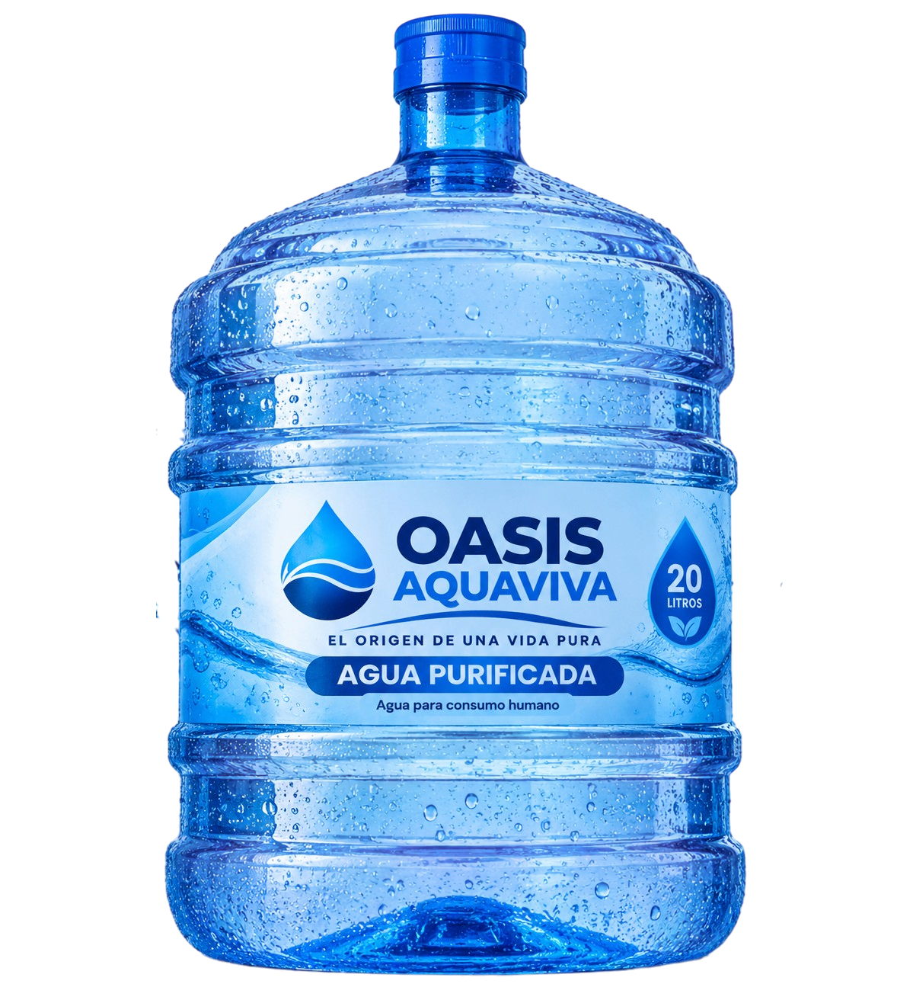

Agua purificada
Proceso en 6 etapas

Planta purificadora de agua · Villa El Salvador
En Oasis Aquaviva purificamos y entregamos agua en bidones de 20 litros para los hogares y pequeños negocios de nuestra zona.
Proceso en 6 etapas
Sector Oasis y zonas cercanas
Con tapa de seguridad
Para hogares y negocios
Somos una planta de agua purificada pensada para el sector Oasis, en Villa El Salvador. Llevamos agua segura a las familias y a los negocios que la necesitan cada día.
Un equipo de cinco jóvenes emprendedores que impulsa una planta local de purificación y distribución de agua, cerca de quienes la consumen.
Abastecer a hogares y pequeños negocios con agua purificada de calidad, a un precio accesible y con un servicio de entrega confiable.
Ser la planta de agua purificada de referencia en Villa El Salvador, reconocida por su calidad, su higiene y la confianza de sus clientes.
Sector Oasis, Villa El Salvador, Lima, Perú.
Atendemos las zonas cercanas a la planta con reparto a domicilio.

Agua purificada Bidón sellado 20 litrosAgua tratada, lista para beber y cocinar, envasada en bidones limpios y sellados. Ideal para el consumo diario de una familia o para la atención en bodegas, puestos de comida y pequeños comercios.
Precio por bidón: S/ 15.00
Pedir mi bidónNuestra agua pasa por un proceso de purificación en etapas y por controles constantes antes de llegar a tu bidón.
Retiene arena, óxido y partículas visibles del agua de entrada.
Reduce el cloro, los olores y los sabores desagradables.
Disminuye la dureza del agua y protege las membranas del equipo.
Separa sales disueltas y otras impurezas con una membrana de alta precisión.
Desinfectan el agua y el envase antes del llenado.
Llenado en bidones lavados y sellados para conservar la pureza.
Acércate a la planta y recarga tu bidón al momento. Sin intermediarios y con atención personal.
Pide por WhatsApp o por teléfono y llevamos el bidón hasta tu puerta, en el sector Oasis y zonas cercanas.
Cinco jóvenes emprendedores comprometidos con llevar agua segura a cada hogar y negocio de la zona.
Jefe de Planta y Operación
Está pendiente de que los equipos de filtración, ablandamiento y desinfección funcionen bien cada día, controla el agua y coordina el mantenimiento de filtros y tanques.
Gestor de Reparto y Administración
Arma las rutas de entrega a domicilio para que el cliente no cargue el bidón, coordina el reparto y lleva al día las ventas, gastos y cobros.
Encargado de Envasado y Almacén
Lleva el llenado de los bidones, controla cuánto stock hay de envases, insumos y agua lista, y organiza los despachos según lo que salga en el día.
Coordinadora Comercial y Atención al Cliente
Responde los pedidos y consultas por WhatsApp, hace seguimiento a los hogares, bodegas y negocios de la zona, y atiende cualquier reclamo o pedido especial.
Responsable de Calidad e Higiene
Se encarga de revisar que los bidones lleguen bien lavados y desinfectados, tengan su sello de seguridad y etiqueta al día, y pasen los controles de calidad.
Escríbenos o llámanos para hacer tu pedido o resolver tus dudas.
Escríbenos por WhatsApp y llevamos agua purificada hasta tu puerta, en el sector Oasis y zonas cercanas.